Οι Καμπύλες που Άλλαξαν τον Κόσμο#
![Ο πίνακας *Ο θρίαμβος του Βάκχου / Οι μεθυσμένοι* του `Diego Velázquez <https://en.wikipedia.org/wiki/Diego_Vel%C3%A1zquez>`__.](_static/images/uploads/2022/12/fig_01_segment.png,_static/images/uploads/2024/07/cubic_06.gif,_static/images/uploads/2023/07/parabola_01.gif,_static/images/uploads/2023/08/rotation-1.png,_static/images/uploads/2023/07/animation.gif,_static/images/uploads/2023/08/rotation_02.png,_static/images/uploads/2022/12/runner.mp4,_static/images/uploads/2023/09/cubic_03.gif,_static/images/uploads/2023/08/parabola_06.png,_static/images/uploads/2024/07/cubic_09.gif,_static/images/uploads/2022/12/image.png,_static/images/uploads/2023/08/parabola_03.gif,_static/images/uploads/2023/08/rotation.png,_static/images/uploads/2023/09/cubic_02-1.png,_static/images/uploads/2023/07/parabola_02.gif,_static/images/uploads/2024/07/cubic_05.gif,_static/images/uploads/2023/04/velazquez_-_el_triunfo_de_baco_o_los_borrachos_museo_del_prado_1628-29.jpg,_static/images/uploads/2024/07/cubic_08.png,_static/images/uploads/2024/07/cubic_07-1.gif,_static/images/uploads/2024/07/simple_curve_001.gif,_static/images/uploads/2023/09/cubic_04.gif,_static/images/uploads/2023/09/cubic_01.png,_static/images/uploads/2023/08/rotation_03.png,_static/images/uploads/2023/09/cubic_01-1.png,_static/images/uploads/2024/07/cubic_07.gif,_static/images/uploads/2024/07/pascal_01.png,_static/images/uploads/2024/07/pascal_02.png,_static/images/uploads/2023/09/cubic_02.png,_static/images/uploads/2023/08/parabola_05.png,_static/images/uploads/2023/08/conics.png,_static/images/uploads/2023/08/parabola_04.gif,_static/images/uploads/2024/07/coeff_01.png,_static/images/uploads/2024/07/simple_probabilities_001.gif,_static/images/uploads/2023/04/line_segment_01.png)
Ο πίνακας Ο θρίαμβος του Βάκχου / Οι μεθυσμένοι του Diego Velázquez.#
Αυτή τη στιγμή διαβάζετε ένα κείμενο. Όπως όλοι ξέρουμε, τα κείμενα αποτελούνται από λέξεις κι οι λέξεις από γράμματα. Αυτά τα γράμματα, τώρα, βρίσκονται εκεί γιατί τουλάχιστον δύο άνθρωποι έχουν εργαστεί προς αυτόν τον σκοπό:
ο, τουλάχιστον ένας, συγγραφέας, που πάτησε σε κάποιο πληκτρολόγιο κάποια πλήκτρα, τα οποία μεταφράστηκαν, τελικά, σε 0 και 1 και,
ο, τουλάχιστον ένας, άνθρωπος που σχεδίασε τη γραμματοσειρά (Baskerville) με την οποία βλέπετε τα γράμματα αυτά στην οθόνη σας.
Ξεχάστε τους συγγραφείς και τους μύστες της τυπογραφίας τώρα και κοιτάξτε για λίγο την οθόνη της συσκευής σας. Δείτε τις γωνίες τις, τα τελειώματα στα άκρα της συσκευής, αφήστε το μάτι σας να ταξιδέψει πέρα από την οθόνη, να δει ίσως τα κουφώματα του γραφείου σας ή τα τα περαστικά οχήματα στον δρόμο, ίσως και τα κάγκελα του μπαλκονιού του απέναντι. Δείτε λίγο τα φτερά αυτού του αεροπλάνου στο οποίο πρόκειται να επιβιβαστείτε, δείτε λίγο τις χειρολαβές του λεωφορείου, δείτε της καμπύλες των καθισμάτων που αγκαλιάζουν την πλάτη σας. Αφήστε το βλέμμα σας να πλανηθεί στην τρομπέτα του πλανόδιου, στην προεκλογική αφίσα που κρύβει επιδέξια με την τσάντα του αυτός ο περαστικός. Προσέξτε τώρα…
Καμπύλες. Όλα αυτά τα πράγματα με τον έναν ή τον άλλο τρόπο, απαρτίζονται από καμπύλες. Κι όλες αυτές οι καμπύλες, ενώ φαίνονται αφάνταστα διαφορετικές στα μάτια ημών, των κοινών θνητών, είναι όλες τους ίδιες στα μάτια ενός δαιμόνιου Γάλλου μηχανικού. Το πώς και το γιατί, θα το δούμε αμέσως τώρα.
Εισαγωγή (Λήψη #002)#
Αν πιστέψατε ότι θα ξεκινούσαμε αμέσως να λέμε ό,τι έχουμε να πούμε, κακώς - αν και είναι αρκετά πολλά αυτά που έχουμε να συζητήσουμε. Πρώτα, ας πούμε δύο κουβέντες για αυτόν τον Γάλλο μηχανικό που αναγγείλαμε παραπάνω με τόσο στόμφο και πάθος. Ο Pierre Bézier (που, από εδώ και στο εξής θα γράφουμε «Μπεζιέ» γιατί αυτό το e με τον τόνο είναι πολύ εκνευριστικό κατά τη δακτυλογράφηση) ήταν ένα Γάλλος μηχανικός που, μεταξύ των πολλών συνεισφορών του στην επιστήμη, ίσως ή αναπάντεχα σημαντικότερη ήταν ένας εναλλακτικός τρόπος να αναπαριστά κανείς κάποιες - λίγες, ομολογουμένως - καμπύλες στο επίπεδο και τον χώρο. Εργάστηκε για χρόνια στη Ρενό (αυτή με τα αυτοκίνητα, ναι) ως σχεδιαστής όπου και αξιοποίησε συστηματικά αυτές τις καμπύλες που έμελλε να ονομαστούν «Καμπύλες Μπεζιέ». Τώρα, αν θέλετε περισσότερα για τον Μπεζιέ, μπορείτε να διαβάσετε και το σχετικό λήμμα της αγγλόφωνης (ή και της γαλλόφωνης) Wikipedia, ενώ εμείς θα περάσουμε βιαστικά στο ζουμερό κομμάτι: τις καμπύλες του μακαρίτη.
- Εεεε, καλά, τώρα, καλύτερη διατύπωση από «τις καμπύλες του μακαρίτη» δεν μπορούσες να βρεις; - Ήταν αυθόρμητο, δε φταίω εγώ! - Και ποιος φταίει; - Μία εσωτερική ενόρμηση… - Καλά, καλά, ας πάμε παρακάτω…
Όπως είπαμε παραπάνω - ή, βασικά, αφήσαμε να εννοηθεί - οι καμπύλες Μπεζιέ βρίσκονται πίσω από σχεδόν ό,τι έχει σχεδιάσει ο σύγχρονος ανθρώπινος πολιτισμός: γραμματοσειρές, αμαξώματα αυτοκινήτων, κουφώματα, παράθυρα αεροπλάνων, ψηφιακές εκτυπώσεις και σχεδόν ό,τι άλλο μπορείτε να φανταστείτε, είναι κατά βάθος μία καμπύλη Μπεζιέ. Θα έλεγε κανείς ότι τόσες πολλές και διαφορετικές καμπύλες δεν μπορούν να αποτυπωθούν με έναν κομψό και συμπαγή μαθηματικό φορμαλισμό - ο οποίος δε φαίνεται, πράγματι, πουθενά στον ορίζοντα. Όμως, όπως ακριβώς οι γάτες και οι πολιτικοί βλέπουν πράγματα που εμείς δε βλέπουμε, έτσι και ο Μπεζιέ, είδε αυτό που κανείς άλλος δεν είχε τολμήσει να δει - υπερβολές, θα πείτε.
- Αχ, ας σταματήσει κάποιος αυτά τα αστεία. - Ποιο αστείο; - «Υπερβολές». «Καμπύλες». «Μαθηματικά». - Συ είπας…
Οι περισσότερες καλές μαθηματικές ιδέες βασίζονται σε μία υπεργενίκευση μίας πολύ απλής και καθημερινής ιδέας. Έτσι κι εμείς θα ξεκινήσουμε το ταξίδι μας στον μαγικό κόσμο των καμπυλών Μπεζιέ με την παρακάτω πολύ απλή ιδέα…
Το Ευθύγραμμο Τμήμα#
Ας θυμηθούμε λίγο πώς μοιάζει ένα ευθύγραμμο τμήμα:
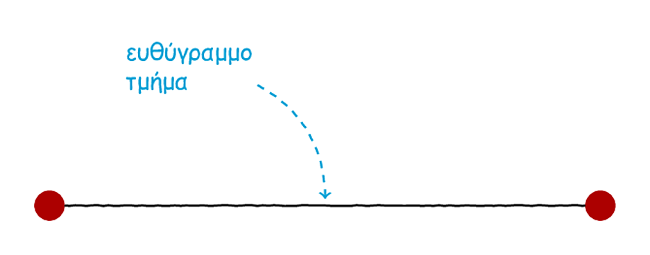
Ωραία. Ας θυμηθούμε λίγο και τους βασικούς όρους γύρω από ένα ευθύγραμμο τμήμα:
τα κόκκινα σημεία τα λέμε «άκρα» του ευθύγραμμου τμήματος,
τα μαύρα σημεία τα λέμε «εσωτερικά» σημεία του ευθύγραμμου τμήματος.
Αυτά, βασικά, δεν έχουμε κάτι άλλο - είπαμε, ξεκινάμε από μία πολύ απλή έννοια. Αν μας δώσουν δύο σημεία, A, B, τότε παίρνουμε το μολύβι μας και τραβάμε μία γραμμή ξεκινώντας από το ένα σημείο με κατεύθυνση προς το άλλο. Αυτό είναι ένα ευθύγραμμο τμήμα!
Πού την είδε τώρα την ιδέα ο Μπεζιέ, θα απορείτε. Ο διάβολος κρύβεται στις λεπτομέρειες λένε, και, αν και δεν αληθεύουν κάτι τέτοια κλισέ τύπου Πάουλο Κοέλιο (συνήθως), αυτό εδώ αληθεύει. Ας ξαναγράψουμε λίγο την παραπάνω πρόταση:
…παίρνουμε το μολύβι μας και τραβάμε μία γραμμή ξεκινώντας από το ένα σημείο με κατεύθυνση προς το άλλο.
Πιερ Μπεζιέ (ή και όχι)
Ας βάλουμε και μία δόση φαντασίας και αντί για μολύβι ας φανταστούμε έναν δρομέα που τρέχει απεγνωσμένα από το ένα σημείο προς το άλλο, όπως παρακάτω:
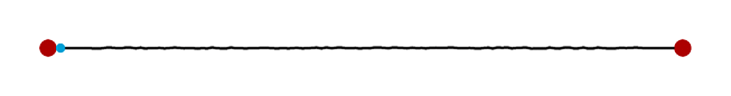
Ένας μικρός γαλάζιος δρομέας που τρέχει!#
Βλέπετε τι ωραία που τρέχει; Ωραία, πώς μπορούμε να το αποτυπώσουμε μαθηματικά αυτό; Αρχικά, ας υποθέσουμε ότι όλα όσα συμβαίνουν τώρα και όσα πρόκειται να συμβούν, λαμβάνουν χώρα επί του Καρτεσιανού επιπέδου. Με αυτήν την υπόθεση, κάθε σημείο έχει και δύο συντεταγμένες, επομένως μπορούμε να αρχίσουμε να κάνουμε πράξεις με τα σημεία του επιπέδου. Για την ακρίβεια, Ας πούμε ότι έχουμε τα ακόλουθα δύο σημεία:
Δε θυμάστε τι είναι το Καρτεσιανό Επίπεδο και πόσα προβλήματα μπορεί να μας δημιουργήσει; Ρίξτε τότε μια ματιά εδώ.
Ας υποθέσουμε επίσης, για δική μας ευκολία, ότι ο χρόνος τρέχει από τη στιγμή 0 μέχρι τη στιγμή 1, μετρημένος σε κατάλληλες μονάδες, έτσι ώστε να τερματίζουμε πάντοτε τη χρονική στιγμή 1. Ας υποθέσουμε επίσης, και πάλι για τη δική μας ευκολία, ότι ο δρομέας τρέχει με σταθερή ταχύτητα τέτοια ώστε να διατρέξει το μήκος του ευθυγράμμου τμήματος σε μία μονάδα χρόνου. Τότε, τη χρονική στιγμή \(t=0.5\) ο δρομέας μας θα είναι στη μέση του ταξιδιού του - καθώς έχει περάσει ο μισός χρόνος - ενώ, αντίστοιχα, όταν \(t=0.3s\) ο δρομέας μας θα βρίσκεται στο 30% της διαδρομής του κ.ο.κ. επομένως, έχουμε μία εικόνα όπως αυτή που σχεδιάσαμε παρακάτω με το μολύβι μας:
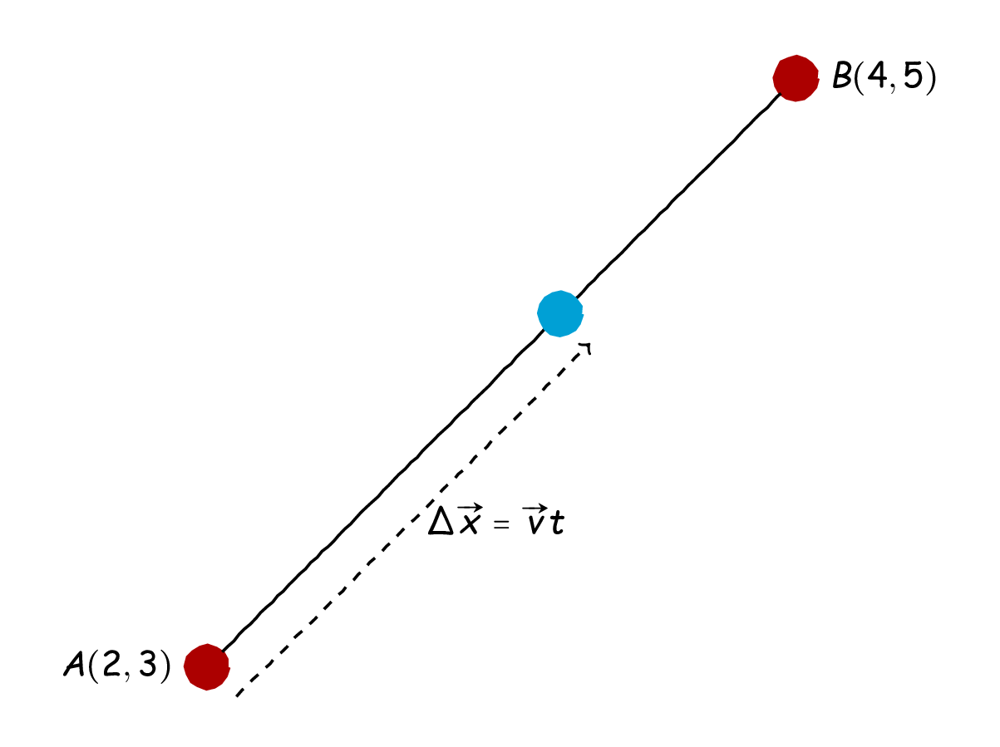
Ένα λιτό ευθύγραμμο τμήμα.#
Τώρα, με τη βοήθεια του χρόνου, θα προσπαθήσουμε κάπως να περιγράψουμε τις συντεταγμένες, \((x,y)\) του μπλε σημείου στο παραπάνω σχήμα. Αφού η ταχύτητά μας είναι σταθερή και ίση με το διάνυσμα \(\vec{AB}\) , δηλαδή, \(\vec{v}=(4-2,5-3)=(2,2)\) , και σε μία μονάδα χρόνου έχουμε διανύσει όλη την απόσταση που έπρεπε, ισχύει ότι:
Συνεπώς, για το σημείο που μας ενδιαφέρει θα ισχύει ότι:
Αν παίξουμε λίγο με το παραπάνω, παρατηρούμε ότι:
Μάλιστα, μπορούμε να αποδείξουμε τον παραπάνω τύπο για κάθε επιλογή σημείων \(A,B\) που θέλουμε να κάνουμε. Συνεπώς, έχουμε αποδείξει ένα αρκετά κομψό αποτέλεσμα. Αν \(A,B\) είναι τα άκρα ενός ευθυγράμμου τμήματος, τότε κάθε σημείο \(X\) του ευθύγραμμου τμήματος έχει την ακόλουθη μορφή:
Ο παραπάνω τύπος, με άλλα λόγια, μπορεί να μας πει κάθε στιγμή πού βρίσκεται ο δρομέας μας πάνω στο επίπεδο, δεδομένου ότι ξέρουμε από πού ξεκινά και πού πρόκειται να καταλήξει.
Και τώρα, τι;
Ας Μιλήσουμε για Καμπύλες#
Είδαμε ότι τα ευθύγραμμα τμήματα μπορούν να περιγραφούν μέσα από ένα αρκετά απλό τρόπο. Αν στην εξίσωση:
αφήσουμε τον χρόνο να κυλήσει, τότε θα δούμε τον δρομέα μας να τρέχει από το \(A\) προς το \(B.\) Αυτήν ακριβώς την ιδέα έρχονται να γενικεύσουν οι καμπύλες Μπεζιέ.
Αντί για έναν απλό δρομέα που τρέχει από ένα σημείο σε ένα άλλο, φανταστείτε δύο δρομείς που τρέχουν στις πλευρές ενός τριγώνου, έτσι ώστε να διανύουν ο καθένας την απόστασή του στον ίδιο χρόνο - μία μονάδα. Η κατάσταση που έχουμε πλέον, μοιάζει κάπως έτσι:
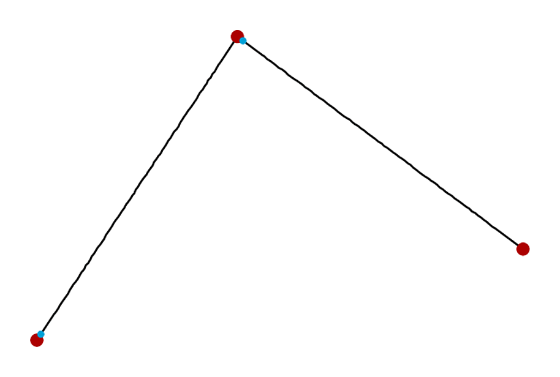
Αμέριμνοι δρομείς, αμέριμνα τρέχουν.#
Τώρα, φανταστείτε λίγο ότι αυτούς τους δρομείς κάτι τους ενώνει. Ένα πάθος άσβεστο, που η θεά Αφροδίτη εμφύσησε μέσα τους; Μία κοινή υποθήκη που ο μάντης Τειρεσίας τους είχε πει ότι θα αποκτήσουν; Ένα νοητό ευθύγραμμο τμήμα; Εσείς διαλέγετε…
Πλάκα κάνουμε. Προφανώς και δε διαλέγετε εσείς - αλλιώς, θα γράφατε κιόλας και δε θα είχαμε βγάλει τενοντίτιδα τόσες μέρες τώρα. Ας φανταστούμε, λοιπόν, ένα ευθύγραμμο τμήμα που συνδέει τους δύο δρομείς, όπως φαίνεται και στο παρακάτω σχήμα:
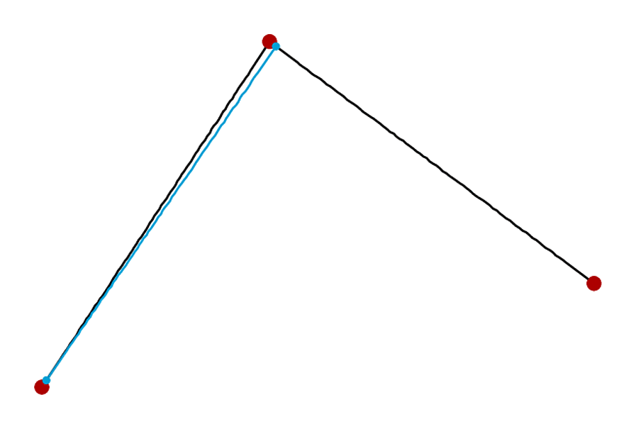
Ένα ευθύγραμμο τμήμα που τρέχει!#
Ως τώρα το σκεπτικό μας είναι αρκετά προβλέψιμο: ευθύγραμμο τμήμα, δρομέας που τρέχει πάνω στο ευθύγραμμο τμήμα. Κι άλλο ευθύγραμμο τμήμα, κι άλλος δρομέας που τρέχει πάνω στο ευθύγραμμο τμήμα. Εμείς στο παραπάνω σχήμα έχουμε τρία ευθύγραμμα τμήματα, αλλά μόνο δύο δρομείς. Επομένως, οφείλουμε, για λόγους αρχής και πιστότητας σε αυτό το πολύ οργανωμένο σχέδιο, να προσθέσουμε άλλον έναν δρομέα στο μοναχικό γαλάζιο ευθύγραμμο τμήμα. Ωστόσο, πώς θα τρέχει αυτός ο δρομέας; Στα δύο ακίνητα μαύρα ευθύγραμμα τμήματα τα πράγματα είναι σχετικά εύκολα, καθώς οι δρομείς μας τρέχουν με σταθερή ταχύτητα σε έναν αμετάβλητο δρόμο. Το γαλάζιο ευθύγραμμο τμήμα, όμως, αλλάζει τόσο μήκος όσο και προσανατολισμό καθώς οι δύο δρομείς μας τρέχουν. Πώς μπορεί, επομένως, κανείς να τρέξει πάνω του;
Εδώ θα χρειαστεί να κάνουμε αυτό το «κατιτίς» που κάνουν συχνά οι μαθηματικοί. Είπαμε, αν δείτε λίγο παραπάνω, ότι η ιδέα πίσω από το ότι οι δρομείς μας κινούνται με σταθερή ταχύτητα έκαστος (όχι όμως την ίδια μεταξύ τους) μαζί με το γεγονός ότι και οι δύο τους ολοκληρώνουν τη διαδρομή τους στον ίδιο χρόνο έχει ως αποτέλεσμα κάθε στιγμή και οι δυο τους να έχει διανύσει το ίδιο ποσοστό της διαδρομής τους. Αυτό θα απαιτήσουμε και από τον νέο μας δρομέα: θα πρέπει κάθε στιγμή να έχει διανύσει το ίδιο ποσοστό του γαλάζιου ευθυγράμμου τμήματος όπως και οι άλλοι δύο δρομείς έχουν κάνει με τα δικά τους μαύρα ευθύγραμμα τμήματα.
Όσο περιμένουμε να στεγνώσουν τα πινέλα μας για να ζωγραφίσουμε την κατάσταση, ας συζητήσουμε λίγο παραπάνω για το πώς είναι καλωδιωμένα τα μυαλά των μαθηματικών. Όπως είπαμε και στην αρχή, σχολιάζοντας την ιδιοφυΐα του Μπεζιέ, όλη η δεξιοτεχνία του συνοψίζεται σε αυτήν την απλή σύλληψη να γενικεύσει μία φαινομενικά αδιάφορη παρατήρηση: ότι κάθε ευθύγραμμο τμήμα μπορεί κανείς να το φανταστεί σαν κάτι δυναμικό και όχι κάτι στατικό. Η ιδέα αυτή αποτυπώνει μία γενικότερη προσέγγιση των μαθηματικών στα πράγματα, που περνάει μέσα από τα χωράφια της αφαίρεσης (όχι της αλγεβρικής πράξης που, όπως έχουμε πει, δεν υπάρχει). Κοιτάζοντας τρία μήλα, τρία αχλάδια, τρία παιδιά, τρεις πλανήτες, τρία κλαδιά, αναζητούμε απεγνωσμένα κάτι κοινό. Καρπός αυτής της αναζήτησης είναι, με την όποια αρχική της ασάφεια, η έννοια της τριάδας. Κάπως έτσι, κοιτώντας τα ευθύγραμμα τμήματα και τους δρομείς στο παραπάνω σχήμα, με την ίδια ζέση, με την ίδια απόγνωση, αναζητούμε κάτι που αυτά να μοιράζονται μεταξύ τους. Κάπως έτσι, παρατηρούμε ότι ο λόγος της διανυθείσας απόστασης προς το συνολικό μήκος του κάθε ευθυγράμμου τμήματος είναι κάθε στιγμή ο ίδιος. Ακόμα καλύτερα, ανάμεσα στα πολλά κοινά που έχουν τα δύο μαύρα ευθύγραμμα τμήματα, αυτό είναι το πιο βολικό για να γενικευθεί και στο γαλάζιο.
[Μπαίνει στη σκηνή ο «άλλος»]
- Στέγνωσαν τα πινέλα, άσε τώρα την αμπελοφιλοσοφία! - [Αποθαρρυμένα μα με μία βουβή συγκατάβαση] Καλά…
Είναι, λοιπόν, ώρα να ζωγραφίσουμε. Αν βάλουμε έναν δρομέα πάνω στο γαλάζιο ευθύγραμμο τμήμα που κινείται σαν παλαβό στο επίπεδο, έτσι ώστε κάθε στιγμή αυτός να ακολουθεί τους άλλους δύο, διανύοντας το ίδιο κλάσμα της συνολικής του απόστασης, έχουμε κάτι σαν το παρακάτω:
Κι όμως, τρέχει!#
Δείτε τι ωραία που τρέχει! Και, το βασικότερο, η τροχιά του, αν και ο ίδιος ο δρομέας ίσως να νομίζει ότι τρέχει πάνω σε μία ευθεία, είναι μία καμπύλη. Αλλά, τι καμπύλη να είναι; Αυτό θα το λύσουμε ευθύς αμέσως, βουτώντας τα παπούτσια του δρομέα μας σε λίγη κόκκινη μπογιά:
Να τη! Να τη, πετιέται!#
Τέλεια, όπως περιμέναμε, φανταζόμασταν, ονειρευόμασταν, ελπίζαμε, η διαδρομή του ερυθρού δρομέα είναι μία καμπύλη. Μα, τι καμπύλη, όμως; Είναι μήπως κομματάκι από έναν μεγάλο κύκλο; Είναι μήπως τμήμα μίας υπερβολής; Μίας παραβολής; Μίας έλλειψης, μήπως; Μήπως δεν είναι κάποια καμπύλη γνωστή και κομψή, αλλά κάποια μυστήρια καμπύλη που γέννησε το σατανικό μυαλό του δαιμόνιου Πιερ Μπεζιέ;
Για να το δούμε αυτό υπάρχουν πολλοί τρόποι. Αρχικά, μπορείτε να κατεβάσετε το αρχείο και να δείτε το όνομά του, αλλά μην το κάνετε, θα είναι κλεψιά (ούτε να το σκεφτείτε, όμως, ουαί κι αλίμονό σας!) Από την άλλη, τώρα, μπορούμε να δοκιμάσουμε να παίξουμε λίγο με τα μαθηματικά που κρύβονται πίσω από το παραπάνω σχήμα. Λοιπόν, το πρώτο βήμα για να κάνουμε μαθηματική την παραπάνω περιγραφή είναι να δώσουμε ονόματα στα σημεία. Εμείς, πέρα από ονόματα όμως, θα δώσουμε και συντεταγμένες στα σημεία, για να κάνουμε τη ζωή μας λίγο πιο εύκολη - ή πιο δύσκολη, για τους ανθρώπους που αποστρέφονται τους αριθμούς, τις πράξεις, και όλα αυτά τα πράγματα του σατανά. Επομένως, έχουμε μία εικόνα όπως η παρακάτω:
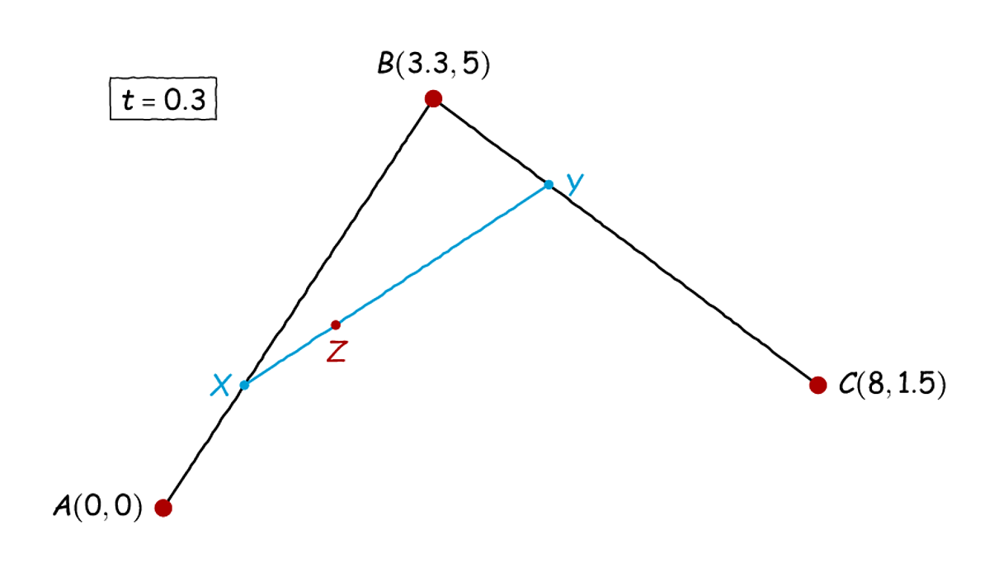
Όλα, πλέον, είναι επώνυμα.#
Ωραία, τώρα μπορούμε επιτέλους να δουλέψουμε. Στο σχήμα μας επιλέξαμε μία δεδομένη χρονική στιγμή για να απαθανατίσουμε την κίνηση των δρομέων μας, ωστόσο το \(t\) στις πράξεις που θα ακολουθήσουν θα το αφήσουμε χωρίς να το αντικαταστήσουμε, για να έχουμε μία γενική εικόνα της κατάστασης. Λοιπόν, για κάποια δεδομένη χρονική στιγμή \(t\in[0,1]\) οι συντεταγμένες του σημείου \(X\) θα είναι:
Ευκολάκι αυτό. Αντίστοιχα, για το \(Y\) θα ισχύει:
Με την ίδια ευκολία, μπορούμε να υπολογίσουμε και τις συντεταγμένες του σημείου \(Z\) την ίδια χρονική στιγμή:
Ωραία, εδώ έχουμε και \(t^2\) στις δύο συντεταγμένες του \(Z\) επομένως, εύλογα η διαδρομή του αντίστοιχου δρομέα δεν είναι ευθεία (εντάξει, αυτό δεν αληθεύει πάντοτε, αλλά αρκετά συχνά για να το επικαλεστούμε σαν επιβεβαίωση των πεπραγμένων μας). Το θέμα είναι, μπορούμε να γράψουμε κάπως την εξίσωση αυτής της καμπύλης με \(x\) και \(y\) και όχι παραμετρικά (με τη βοήθεια του \(t,\) δηλαδή) όπως παραπάνω;
Σαφώς και μπορούμε!
Ας πούμε ότι το \(Z\) γράφεται σε καρτεσιανές συντεταγμένες ως \(Z=(x,y).\) Τότε, προφανώς, θα πρέπει να ισχύουν τα εξής:
Ας πολλαπλασιάσουμε την πρώτη εξίσωση με το 5 και τη δεύτερη με το 2 έτσι ώστε να έχουμε ακέραιους συντελεστές - αυτή η παρέμβαση είναι κυρίως αισθητικής σημασίας και μπορείτε να την αγνοήσετε αν δε σας ενοχλούν τα δεκαδικά:
Τώρα μπορούμε αρχικά να απαλείψουμε το \(t^2\) αν πολλαπλασιάσουμε την πρώτη εξίσωση με 17 και τη δεύτερη με 7, οπότε παίρνουμε:
Προσθέτοντας κατά μέλη τις παραπάνω σχέσεις και λύνοντας ως προς \(t\) παίρνουμε:
Αντικαθιστούμε το παραπάνω αποτέλεσμα στη δεύτερη σχέση, οπότε παίρνουμε, έπειτα από λίγες πράξεις:
Τώρα που έχουμε μία εξίσωση με \(x,y\) τι καταλάβαμε; Μπορούμε να αποφανθούμε αν αυτή είναι υπερβολή ή παραβολή ή ό,τι είναι, τέλος πάντων;
Ξεψαχνίζοντας Καμπύλες#
Προφανώς, για να αρχίζει νέα ενότητα, καταλαβαίνετε ότι έχουμε βρεθεί σε ένα τέλμα. Έχουμε μία εξίσωση δύο μεταβλητών που παριστάνει μία καμπύλη στο επίπεδο και δεν ξέρουμε τι είδους καμπύλη είναι. Υποψιαζόμαστε, από αυτά τα τετράγωνα που είδαμε παραπάνω, ότι θα είναι κάποια από τις γνωστές μας κωνικές τομές, όμως, έτσι όπως είναι γραμμένη, δε μοιάζει με καμιά τους. Οι βασικές εξισώσεις των κωνικών τομών, όπως τις ξέρουμε από το λύκειο, είναι οι εξής:
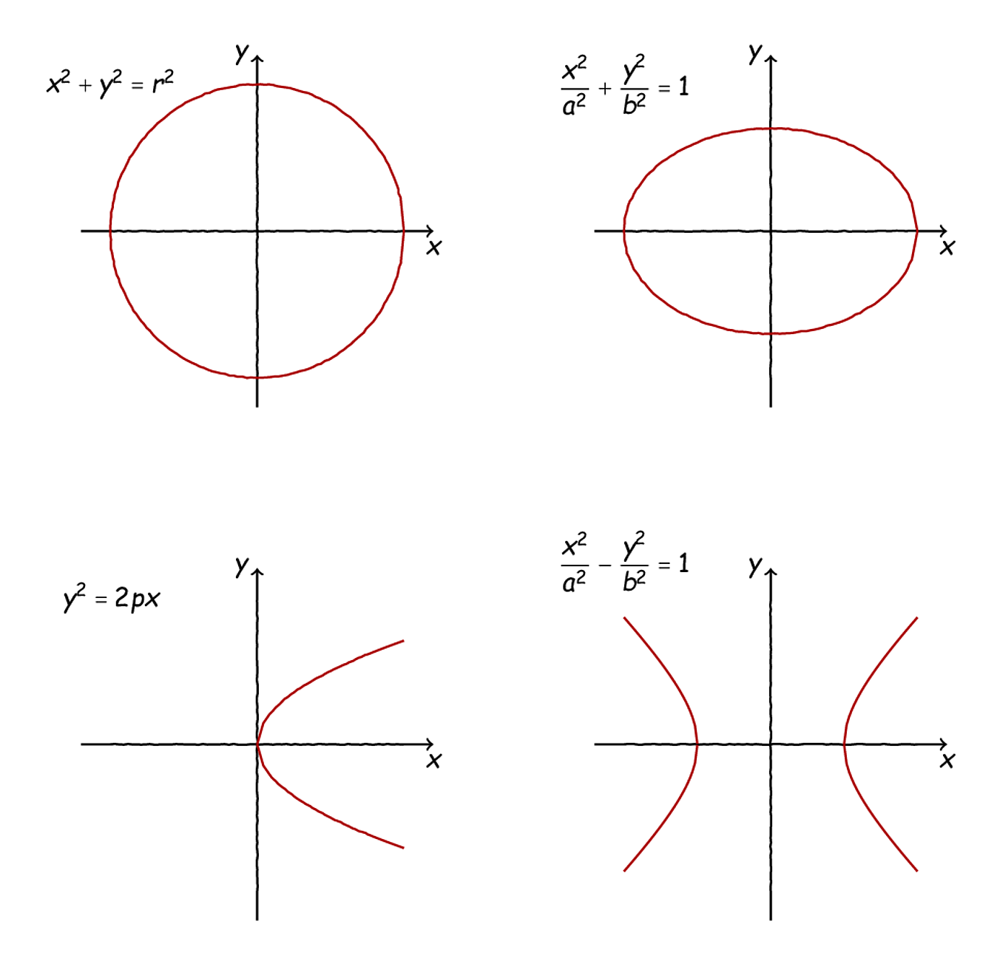
Οι γνωστές και μη εξαιρετέες κωνικές τομές.#
Βέβαια, θα πείτε τώρα, δε μοιάζει με καμία από τις παραπάνω η εξίσωσή μας, οπότε, τι να το κάνουμε αυτό το σχήμα; Εδώ θα χρειαστεί να βάλουμε λίγο τη φαντασία μας να δουλέψει. Παρατηρώντας λίγο το παραπάνω σχήμα και τις αντίστοιχες εξισώσεις, θα δούμε ότι όλες τους περιγράφουν καμπύλες που είναι τοποθετημένες «βολικά» σε σχέση με τους δύο άξονες. Ωστόσο, η καμπύλη μας δεν είναι και τόσο βολικά τοποθετημένη σε σχέση με τους άξονες, καθώς ένα από τα σημεία της είναι και η αρχή των αξόνων, πράγμα που δε συμβαίνει σε καμία από τις παραπάνω βασικές περιπτώσεις παρά μόνο με την κορυφή μίας παραβολής. Επομένως, ίσως θα βόλευε κάπως να τη μετακινήσουμε, έτσι ώστε να βρεθεί σε μία πιο άνετη θέση σε σχέση με τους άξονες.
Τι εννοούμε όμως όταν λέμε «μετακινήσουμε»;
Όπως ίσως θα έχετε παρατηρήσει και από την καθημερινή σας ζωή, όταν μετακινούμε ένα πράγμα, συνήθως, δεν αλλοιώνεται η μορφή του - ή τουλάχιστον, αυτή είναι η επιδίωξή μας, εκτός αν πρόκειται για πολιτικό κόμμα. Επομένως, θέλουμε να αναζητήσουμε τρόπους με τους οποίους θα πάρουμε την καμπύλη μας και θα την πάμε μεν αλλού, σε σχέση με τους άξονες, αλλά δε θα την κάνουμε να μοιάζει με κάτι άλλο.
Το πιο απλό που μπορούμε να κάνουμε είναι να σπρώξουμε λίγο την καμπύλη μας αριστερά ή δεξιά ή πάνω ή κάτω. Ισοδύναμα, θυγατροθετώντας μία καμπυλοκεντρική προσέγγιση, μπορούμε να μετακινήσουμε τους άξονες δεξιά ή αριστερά ή κάτω ή πάνω. Μπορεί να φαίνεται σαν να παρουσιάζουμε τις δύο όψεις του ίδιου νομίσματος, ωστόσο, όπως συνήθως συμβαίνει με τα μαθηματικά, πολλές φορές η μία όψη είναι ασύγκριτα πιο ευανάγνωστη από την άλλη.
Επομένως, ας πούμε ότι θέλουμε να πάμε τον οριζόντιο άξονα 3 μονάδες δεξιά. Δηλαδή, εκεί που τώρα είναι το 3 θέλουμε να είναι πλέον το 0, εκεί που είναι το 5 θέλουμε να είναι το 2 κ.λπ. Αν συμβολίσουμε με \(X\) τις νέες μετατοπισμένες συντεταγμένες και με \(x\) τις παλιές, τότε είναι εύκολο να δει κανείς ότι αυτές σχετίζονται ως εξής:
Αντίστοιχα, αν θέλουμε να μετακινήσουμε τον κατακόρυφο άξονα κατά 5 μονάδες προς τα κάτω, τότε οι μετατοπισμένες συντεταγμένες \(Y\) θα σχετίζονται με τις παλιές συντεταγμένες \(y\) ως εξής:
Με αυτές τις δύο μετατοπίσεις που κάναμε, η αρχή των αξόνων θα έχει μετατοπιστεί από το σημείο \((0,0)\) (σε παλιές συντεταγμένες) στο σημείο \((3,-5)\) (σε παλιές συντεταγμένες), δηλαδή, 3 μονάδες δεξιά και 5 μονάδες κάτω.
Τώρα, ας θυμηθούμε για μια στιγμή την εξίσωση της καμπύλης μας:
Αν τώρα κάνουμε την αντικατάσταση \(x=X+3\) και \(y=Y-5\) στην παραπάνω εξίσωση θα πάρουμε μία νέα εξίσωση που θα περιλαμβάνει \(X, Y, X^2, Y^2\) και τον όρο \(XY\) - μπορείτε να κάνετε τις πράξεις αν θέλετε, αν και αυτό που ισχυριζόμαστε φαίνεται με το μάτι. Οι πρώτοι τέσσερις όροι δε μας ενοχλούν, γιατί εμφανίζονται στις βασικές εξισώσεις των κωνικών τομών που είδαμε παραπάνω. Ωστόσο, ο όρος \(XY\) δεν εμφανίζεται σε καμιά τους, επομένως, αυτή η μετατόπιση δε μας λύνει και ιδιαίτερα τα χέρια.
Γενικότερα, μάλιστα, οποιαδήποτε αλλαγή συντεταγμένων από \(x,y\) σε \(X=x-x_0\) και \(Y=y-y_0\) δε θα μας βοηθήσει στο να απαλείψουμε τον σατανικό αυτό όρο \(XY.\) Τι άλλο θα μπορούσαμε να κάνουμε;
Είπαμε λίγο παραπάνω ότι επιτρέπουμε στους εαυτούς μας να μετακινούν την καμπύλη με τρόπους που δεν αλλοιώνουν τη μορφή της. Αυτό πρακτικά σημαίνει ότι κάθε στιγμή οι άξονες πρέπει να παραμένουν ορθοκανονικοί, δηλαδή να είναι κάθετοι μεταξύ τους και οι μονάδες μέτρησης των δύο αξόνων να συμπίπτουν - ή, έστω, να έχουν την ίδια σχέση μεταξύ τους. Αυτά όλα συμβαίνουν όταν απλά μετακινούμε την αρχή των αξόνων, οπότε όσα κάναμε παραπάνω ήταν ευπρόσδεκτα, αν και ελαφρώς άχρηστα. Μία ακόμα εναλλακτική είναι η περιστροφή των αξόνων γύρω από την αρχή τους, όπως για παράδειγμα φαίνεται στο παρακάτω σχήμα:
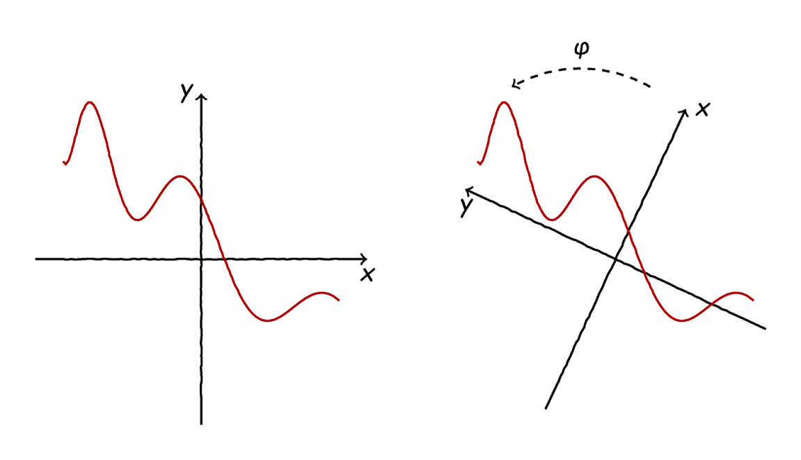
Στρίβουμε τους άξονες, όχι την καμπύλη.#
Ίσως αυτή η αλλαγή συντεταγμένων να μας βοηθήσει να εξαφανίσουμε τον όρο \(xy\) που δεν εμφανίζεται σε καμία από τις βασικές εξισώσεις των κωνικών τομών. Όμως, πώς επηρεάζει μία περιστροφή των αξόνων κατά μία γωνία \(\phi\) τις συντεταγμένες των σημείων στο επίπεδο;
Ας ρίξουμε μία ματιά στο παρακάτω παράδειγμα:
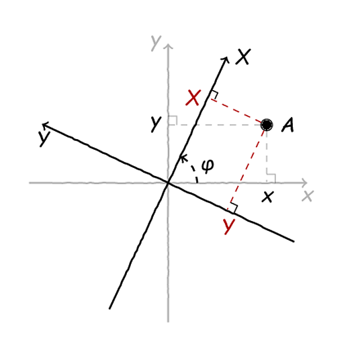
Στρίιιβουμε!#
Όπως βλέπετε, στο σχήμα μας εμφανίζονται πολλές ορθές γωνίες, άρα και ορθογώνια τρίγωνα, επομένως είναι αρκετά πιθανό η σχέση μεταξύ των δύο συντεταγμένων να περνάει μέσα από τα χωράφια της τριγωνομετρίας. Μόνο που για να κάνουμε τριγωνομετρία θα χρειαστεί να σημειώσουμε κάποια ακόμα πράγματα στο σχήμα μας:
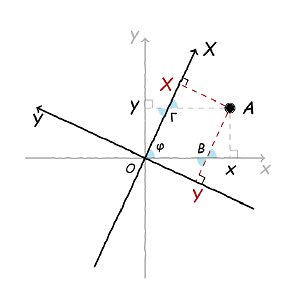
Μικρές πλην όμως χρήσιμες σημειώσεις.#
Όλες αυτές οι μικρές γαλάζιες γωνίες είναι ίσες με τη γωνία στροφής φ και, όπως βλέπετε, είναι όλες τους εγκλωβισμένες σε κάποιο ορθογώνιο τριγωνάκι. Βούτυρο στο ψωμί των τριγωνομετρών είναι κάτι τέτοιες καταστάσεις. Λοιπόν, να πούμε κάπου εδώ ότι τα γράμματα \(x,y,X,Y\) θα τα χρησιμοποιούμε τόσο για να μιλήσουμε για τα (προσημασμένα) μήκη των ευθυγράμμων τμημάτων \(Ox,Oy,OX,OY\) όσο και για τα αντίστοιχα σημεία που σημειώνονται στο σχήμα - για οικονομία στα σύμβολα. Μία πρώτη απλή παρατήρηση είναι η εξής:
Απλό, δεν κάναμε κάτι άλλο παρά να σπάσουμε το ευθύγραμμο τμήμα \(Ox\) σε δύο μέρη. Η ΟΒ, με τη σειρά της, είναι η υποτείνουσα του τριγώνου ΟΒΥ, επομένως ισχύει το εξής:
Ανάλογα, παρατηρούμε ότι:
Επίσης, για το ευθύγραμμο τμήμα ΑΒ ισχύει ότι:
Αντικαθιστώντας στα παραπάνω έχουμε:
Συμμαζεύοντας όσα βρήκαμε έχουμε:
Επομένως, είχαμε δεν είχαμε, εκφράσαμε τη μία συντεταγμένη συναρτήσει των δύο παλιών. Πάμε να εργαστούμε αναλόγως και γύρω από το σημείο Γ τώρα. Αρχικά, έχουμε:
Αναλόγως έχουμε:
Επίσης, έχουμε:
Αντικαθιστώντας τώρα στα παραπάνω παίρνουμε:
Αντικαθιστούμε τα ευρήματά μας για το \(Y\) από λίγο παραπάνω και έτσι παίρνουμε:
Ας θυμηθούμε τώρα την πιο διάσημη τριγωνομετρική ταυτότητα:
Με τη βοήθειά της παίρνουμε:
Επομένως. με λίγες πράξεις βρήκαμε ότι:
Δηλαδή, όταν στρίβουμε τους άξονές μας κατά μία γωνία φ τότε οι συντεταγμένες αλλάζουν κατά των τρόπο που περιγράφουν οι δύο παραπάνω εξισώσεις. Εμείς ελπίζουμε τώρα μία κατάλληλη στροφή να μπορεί να εξαφανίσει από την εξίσωσή μας αυτόν τον εκνευριστικό όρο \(xy\) που δεν εμφανίζεται σε καμία από τις βασικές εξισώσεις των κωνικών τομών. Επομένως, θα μας ήταν χρήσιμο να είχαμε και μία έκφραση των αρχικών συντεταγμένων \(x,y\) συναρτήσει των περιεστραμμένων συντεταγμένων \(X,Y.\) Αυτό μπορεί να γίνει εύκολα λύνοντας το παραπάνω σύστημα ως προς \(x,y,\) οπότε και παίρνουμε:
Η βασανιστική εξίσωση της καμπύλης μας είναι, όπως ίσως θυμάστε, η εξής:
Για να μην πήξουμε τώρα στις πράξεις, ας ασχοληθούμε με τη γενικότερη περίπτωση που έχουμε μία καμπύλη της μορφής:
Αν τώρα στρίψουμε τους άξονες κατά μία γωνία φ αυτό θα αλλάξει δραστικά τη μορφή της εξίσωσής μας. Μπορούμε να κάνουμε αναλυτικά τις πράξεις, αντικαθιστώντας τα \(x,y\) με βάση τις σχέσεις που γράψαμε παραπάνω, ωστόσο εμάς μας ενδιαφέρει ο συντελεστής του όρου \(XY\) που θα προκύψει στις νέες συντεταγμένες. Επομένως, θα εστιάσουμε μόνο στο πώς μετασχηματίζονται οι όροι \(Ax^2,By^2\) και \(Cxy\) που μπορούν να μας δώσουν, έπειτα από αντικατάσταση, τον καθόλου ποθητό όρο \(XY.\) Έχουμε και λέμε:
Θα πάρουμε από το \(Ax^2\) έναν όρο \(-2AXY\sin\phi\cos\phi\) ο οποίος, με λίγη τριγωνομετρία μπορεί πιο συνοπτικά να γραφεί: \(-AXY\sin2\phi.\)
Αναλόγως, από το \(By^2\) θα πάρουμε έναν όρο \(BXY\sin2\phi.\)
Τέλος, από το \(Cxy\) θα πάρουμε έναν όρο \(CXY\left(\cos^2\phi-\sin^2\phi\right)\) ο οποίος, και πάλι, με λίγη τριγωνομετρία, μπορεί να γραφτεί ως εξής: \(CXY\cos2\phi.\)
Επομένως, στις νέες συντεταγμένες, ανάμεσα στα καθόλα θεμιτά \(X^2,Y^2,X,Y\) θα εμφανιστεί και ο παρακάτω όρος:
Θυμηθείτε κάπου σε αυτό το σημείο ότι εμείς αυτόν τον όρο θέλουμε να τον εξαφανίσουμε γιατί μας κάνει τη ζωή δύσκολη. Επομένως, θέλουμε να μηδενίσουμε τον συντελεστή του, δηλαδή θέλουμε να στρίψουμε τους άξονες κατά μία γωνία φ έτσι ώστε να ισχύει:
Πολύ ωραία τα βρήκαμε όλα ως τώρα. Για την περίπτωσή μας, όπου \(A=17\cdot85^2,\) \(B=17\cdot14^2\) και \(C=17\cdot28\cdot85\) έχουμε:
Τώρα, ρίχνοντας μία ματιά σε έναν τριγωνομετρικό πίνακα αν είμαστε της παλιάς σχολής ή απλά ανοίγοντας ένα κομπιουτεράκι, μπορούμε να δούμε ότι η γωνία φ που μας λύνει τα χέρια είναι η:
Αν στρίψουμε τους άξονές μας τόσες μοίρες, θα πάρουμε μία εξίσωση που δε θα έχει \(XY.\) Επίσης, με σκεπτικό παρόμοιο με το παραπάνω μπορούμε να υπολογίσουμε τους συντελεστές όλων των όρων που θα απομείνουν στην εξίσωση. Από αυτούς, ιδιαίτερο ενδιαφέρον παρουσιάζει ο όρος \(Y^2\) του οποίου ο συντελεστής θα έχει τη μορφή:
Αντικαθιστώντας τα \(A,B,C\) από την εξίσωσή μας βρίσκουμε το εξής:
Αυτό, με λίγο συμμάζεμα μπορεί να γραφτεί έτσι:
Τώρα, θυμηθείτε λίγο ένα από τα κομβικά ευρήματά μας παραπάνω:
Θυμηθείτε επίσης και μία ωραία τριγωνομετρική ταυτότητα:
Με οδηγό την παραπάνω ταυτότητα, μπορούμε να γράψουμε το εξής:
Συγκρίνοντας το παραπάνω με την ταυτότητά μας (και δεδομένου ότι η φ είναι οξεία) συμπεραίνουμε άμεσα ότι:
Επομένως, εκτός από τον συντελεστή του \(XY\) και ο συντελεστής του \(Y^2\) θα είναι μηδενικός. Άρα, στις νέες συντεταγμένες μας, η εξίσωση της καμπύλης μας θα έχει την παρακάτω μορφή:
Με ένα μικρό συμπλήρωμα τετραγώνου, η παραπάνω εξίσωση έρχεται εύκολα στη μορφή \(X^2=2pY\) που δεν είναι παρά η κανονική μορφή μίας παραβολής. Επομένως, μετά κόπων και βασάνων, βεβαίως βεβαίως, αποδείξαμε ότι η καμπύλη που διαγράφει αυτός ο μυστήριος δρομέας είναι μία ταπεινή παραβολή.
Κουραστικό, ε;
Στάση για Διάλειμμα#
Πριν συνεχίσουμε την ανάλυσή μας για τις καμπύλες Μπεζιέ, θα κάνουμε μία μικρή στάση για να δούμε πώς τα τρία σημεία που ουσιαστικά καθόρισαν τη μορφή της παραπάνω καμπύλης σχετίζονται με την ίδια την παραβολή. Γι” αυτόν τον σκοπό θα χρειαστούμε τώρα λίγη σχολική αναλυτική γεωμετρία και λίγη ανάλυση. Αρχικά, η καμπύλη μας είναι τμήμα μίας παραβολής, οπότε θα είναι παραγωγίσιμη - αυτό είναι σαφές και από τις αναλυτικές εκφράσεις των \(x\) και \(y\) που βρήκαμε παραπάνω. Επομένως, έχει νόημα να ψάξουμε για τις εφαπτόμενες της καμπύλης μας στα σημεία \(A\) και \(C.\) Γενικά, για κάθε \(t\) η κλίση της εφαπτομένης της καμπύλης μας στο σημείο \(Z=Z(t)\) θα είναι:
Ειδικότερα στα άκρα της καμπύλης, θα έχουμε τις εξής κλίσεις:
Για το σημείο \(A=Z(0)\) έχουμε \(Z'(0)=(6.6,10).\)
Για το σημείο \(B=Z(1)\) έχουμε \(Z'(1)=(9.4,-7).\)
Τώρα, τι μας λένε αυτά τα νούμερα, άραγε;
Ας ρίξουμε μία ματιά στο πρώτο, το \(Z'(0)=(6.6,10).\) Μας θυμίζει κάτι αυτό; Αν κοιτάξουμε τις συντεταγμένες που έχουμε επιλέξει, θα δούμε ότι αυτό το διάνυσμα μοιάζει αρκετά με το διάνυσμα \(\vec{AB}\) αφού:
Από τα σχολικά μας μαθηματικά ας θυμηθούμε ότι δύο διανύσματα που είναι το ένα πολλαπλάσιο του άλλου είναι συγγραμμικά (παράλληλα). Ειδικότερα, δε, όταν το ένα είναι θετικό πολλαπλάσιο του άλλου, τα δύο διανύσματα είναι και ομόρροπα, δηλαδή «κοιτούν» προς την ίδια μεριά. Στην περίπτωσή μας, αυτό σημαίνει ότι αρχικά ο δρομέας μας στέκεται στο σημείο Α και κοιτάζει προς το σημείο Β ή, εμπλέκοντας λίγο και τις παραγώγους, ότι η ευθεία \(AB\) εφάπτεται στην καμπύλη μας στο σημείο Α.
Άραγε, μήπως λόγω συμμετρίας ισχύει και κάτι αντίστοιχο για το σημείο C; Είναι σχετικά εύκολο να το δει κανείς αυτό, αν παρατηρήσει ότι:
Τέλεια, άρα και η BC είναι εφαπτομένη της καμπύλης μας στο C. Επομένως, τα τρία σημεία που χρησιμοποιήσαμε για να ορίσουμε, ουσιαστικά την καμπύλη μας παίζουν έναν πολύ κομβικό ρόλο, καθώς καθορίζουν και τις εφαπτόμενές της στα δύο άκρα της.
Αυτό δεν περιορίζεται μόνο στα τρία σημεία που χρησιμοποιήσαμε για να καθορίσουμε ουσιαστικά την καμπύλη μας. Ρίξτε μία ματιά στο παρακάτω σχήμα:
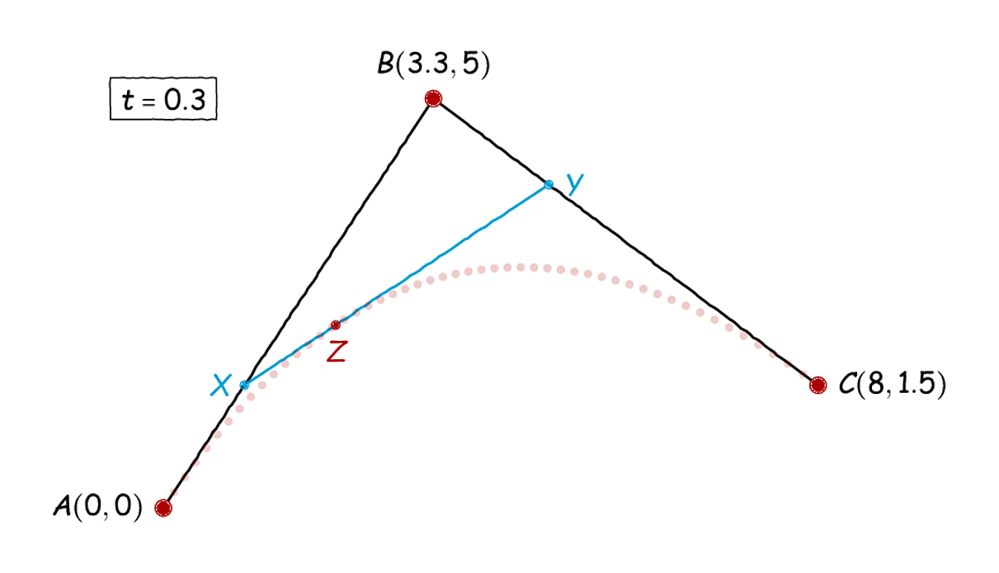
Τη θυμάστε;#
Τι σχέση έχει άραγε το γαλάζιο ευθύγραμμο τμήμα του σχήματος με την καμπύλη μας;
Αν σκέφτεστε ότι εφάπτονται, καλά κάνετε, γιατί πράγματι αυτό συμβαίνει. Μπορείτε αν έχετε όρεξη να κάνετε τις πράξεις για να το επιβεβαιώσετε, ωστόσο μπορούμε να δώσουμε κι ένα πιο απλό επιχείρημα. Το ευθύγραμμο τμήμα ΧΥ είναι το τμήμα πάνω στο οποίο ο βασικός δρομέας μας κινείται, συνεπώς κάθε στιγμή το διάνυσμα της ταχύτητας του δρομέα μας είναι παράλληλο με το ΧΥ. Τώρα, ως γνωστόν, το διάνυσμα της ταχύτητας του δρομέα μας εφάπτεται επίσης στην καμπύλη που αυτός διαγράφει (την τροχιά του, που λέμε), επομένως, και το ευθύγραμμο τμήμα ΧΥ θα πρέπει να εφάπτεται στην καμπύλη κάθε στιγμή, με το σημείο επαφής να συμπίπτει με τη θέση του δρομέα.
Ωραία, Και;#
Διαβάζετε κάπου 25 λεπτά τώρα και αυτές οι φοβερές και τρομερές καμπύλες Μπεζιέ, που έχουμε διαφημίσει σαν να παίρνουμε ποσοστά από τους κληρονόμους του μακαρίτη, είναι ως τώρα είτε ευθύγραμμα τμήματα είτε παραβολές. Όχι, δα, και κάτι τρομερό, θα έλεγε κάποιος πιο πονηρεμένος. Ωστόσο, δε χρειάζεται να μείνουμε εκεί. Ας πάρουμε ένα λίγο πιο περίπλοκο σενάριο:
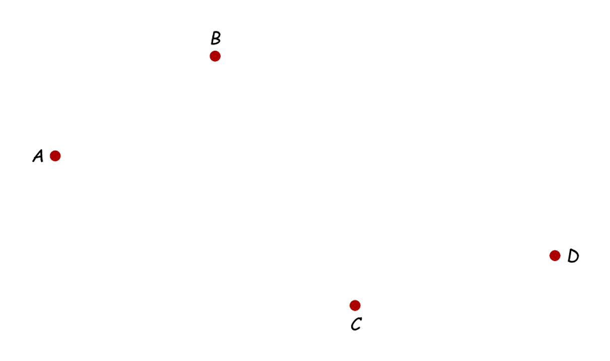
Τέσσερα σημεία.#
Αυτά, όπως βλέπετε, είναι τέσσερα σημεία στο επίπεδο. Δε θα περιοριστούμε όμως μόνο σε αυτό. Ας ενώσουμε αυτά τα σημεία με τον προφανή τρόπο - εδώ κάνουμε μία μικρή επίκληση σε γνωστά αποτελέσματα της γνωστικής ψυχολογίας περί «προφανοσύνης»:
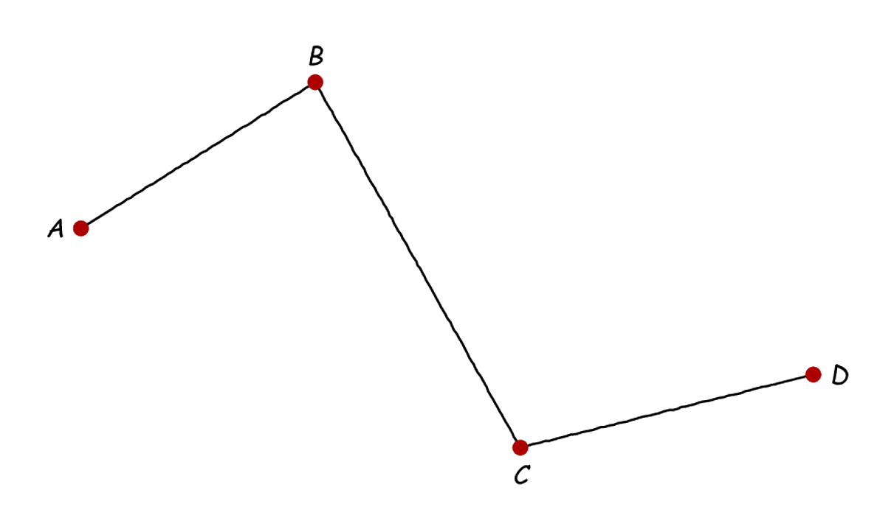
Τέσσερα συνδεδεμένα σημεία.#
Τώρα, ας αρχίσουμε να ακολουθούμε τα χνάρια που αφήσαμε παραπάνω. Αρχικά, φανταστείτε από έναν δρομέα να τρέχει πάνω σε καθένα από τα τρία ευθύγραμμα τμήματα που έχουν εμφανιστεί:
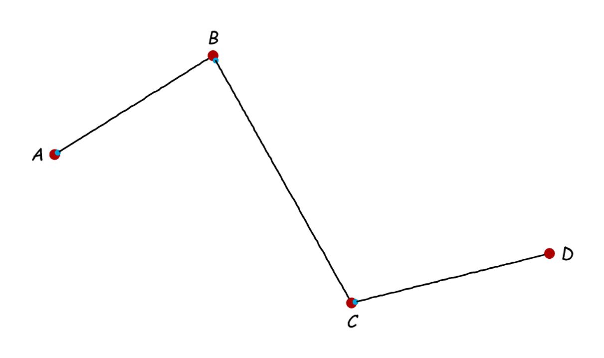
Άντε, τρεχάματα πάλι!#
Τώρα, θα ενώσουμε αυτούς τους δρομείς και θα πάρουμε αυτό:
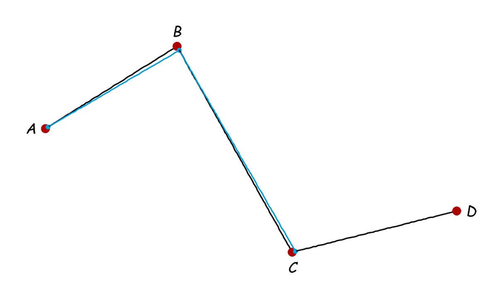
Α, μία τρέχουσα τεθλασμένη γραμμή!#
Το βλέπετε πού πάει το πράγμα ή ακόμα; Αν δεν το βλέπετε, το επόμενο βήμα μας θα είναι, σαφώς, σαφέστατα, να βάλουμε από έναν δρομέα πάνω σε καθένα από τα δύο γαλάζια ευθύγραμμα τμήματα. Έτσι, θα πάρουμε κάτι σαν το παρακάτω:
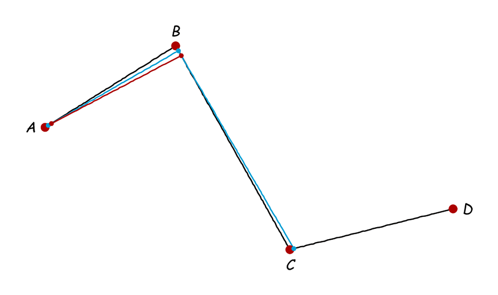
Α, άλλο ένα ευθύγραμμο τμήμα που τρέχει!#
Τώρα, δειλά-δειλά, φαίνεται τι πρόκειται να συμβεί στον ορίζοντα. Σαφώς, θα πάμε και θα βάλουμε άλλον ένα δρομέα να τρέξει πάνω στο κόκκινο ευθύγραμμο τμήμα που έχουμε σχεδιάσει. Έτσι, έχουμε, τελικά, μία εικόνα όπως η παρακάτω:
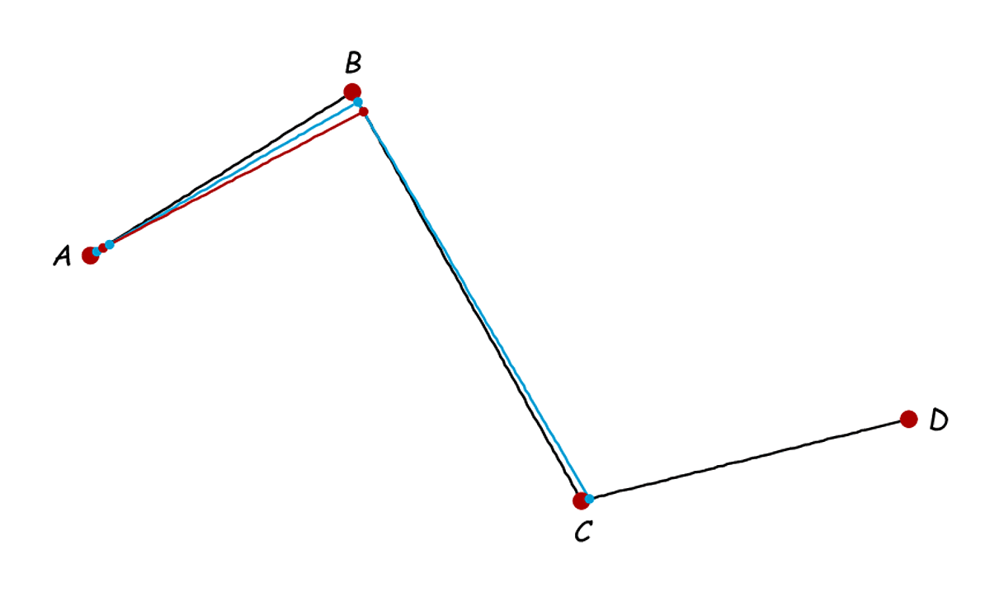
Ωχ, ένας γαλάζιος δρομέας σε ένα κόκκινο τμήμα με κόκκινα άκρα σε γαλάζια τμήματα… [Πολιτικό σχόλιο;]#
Τώρα, η ερώτηση-κλειδί, όπως φαντάζεστε, είναι μία: Ποιο είναι το ίχνος του γαλάζιου δρομέα;
Για να το δούμε αυτό δεν έχουμε παρά να βουτήξουμε τα παπούτσια του δρομέα μας σε λίγη γαλάζια μπογιά και, στη συνέχεια, να τον αφήσουμε να τρέξει ελεύθερα όπως ακριβώς κάναμε και παραπάνω. Αν το κάνουμε αυτό, θα πάρουμε το εξής:
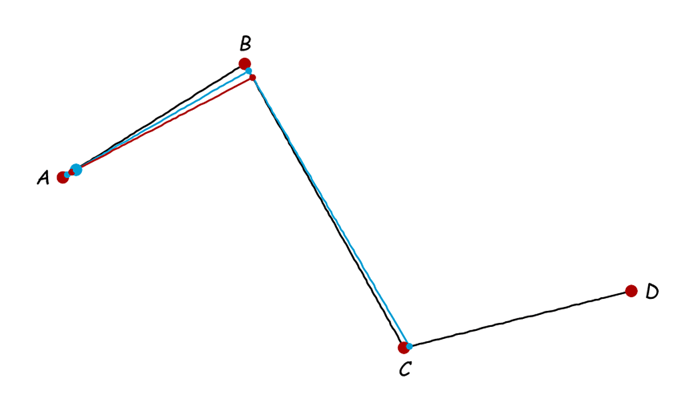
Ωχ, ωχ! Τι καμπύλη είναι αυτή;#
Ααααα, μάλιστα, μάλιστα, εδώ το πράγμα έχει σαφώς αλλάξει. Η καμπύλη αυτή, όπως ίσως μπορείτε να φανταστείτε, δεν είναι καμία από τις γνωστές μας κωνικές τομές, καθώς κάνει αυτό το «πάνω-κάτω-πάνω» που δεν το συνηθίζουν. Επομένως, επιτέλους, καταφέραμε να σχεδιάσουμε μία κάπως πιο περίτεχνη καμπύλη, που δεν είναι κάποια καμπύλη που ξέραμε αλλά ένα νέο πλάσμα στο σύμπαν των καμπυλών Μπεζιέ.
Ποιο πλάσμα, όμως;
Λοιπόν, για να βρούμε την εξίσωση της παραπάνω καμπύλης, όπως ίσως φαντάζεστε, θα ιδρώσουμε λίγο. Ας πάρουμε, όπως και πριν, ένα στιγμιότυπο της καμπύλης μας, για \(t=0.3s\) , σαν κι αυτό που φαίνεται παρακάτω:
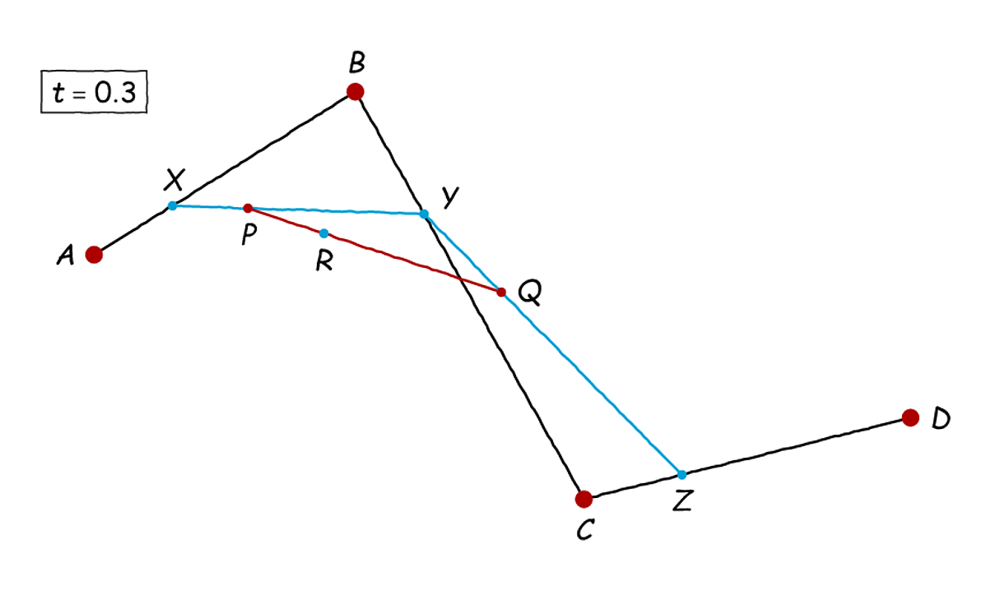
Ωραία, τώρα όλα έχουν τα ονόματά τους, όπως έπρεπε…#
Ωραία, όπως και προηγουμένως, κάθε σημείο πέρα από τα A, B, C, D βρίσκεται στο 30% του αντίστοιχου ευθύγραμμου τμήματος επί του οποίου ζει. Ωστόσο, εμείς θα αγνοήσουμε αυτό το 30% και θα αφήσουμε το \(t\) στις πράξεις μας παρακάτω γιατί έτσι θα πάρουμε μία κάπως πιο γενική μορφή, ελπίζουμε. Έχουμε και λέμε, αρχικά για τα σημεία X, Y, Z:
Όχι πράξεις ακόμα, γιατί τα νούμερα δε μας νοιάζουν πλέον (;). Έπειτα, με βάση τα παραπάνω τα P, Q θα είναι:
Για το Q δε χρειάζεται να κάνουμε πράξεις, αφού απλά αρκεί να βάλουμε όπου C το D, όπου B το C και όπου A το B. Έτσι παίρνουμε:
Τώρα, μένει ένα ακόμα βήμα:
Α, τέλεια, τώρα μπορούμε να βάλουμε συντεταγμένες στα A, B, C, D και να βρούμε την (παραμετρική) εξίσωση της καμπύλης που ζωγραφίσαμε παραπάνω, αλλά δε θα το κάνουμε. Και δε θα το κάνουμε διότι βαριόμαστε και στο παραπάνω αποτέλεσμα παρατηρούμε κάτι πολύ ωραίο. Αν δεν το παρατηρείτε κι εσείς τότε, ρίξτε μία ματιά στα αποτελέσματα που βρήκαμε για το P - που, όπως είδαμε παραπάνω θα κινείται σε μία παραβολή - και το R:
Σας θυμίζουν κάτι τα παραπάνω; Αν όχι, αγνοήστε λίγο τα A, B, C, D και βαφτίστε προς στιγμήν το \(1-t\) ως \(a\) και το \(t\) ως \(b\) οπότε και θα έχουμε:
Ωχ, τι δουλειά έχουν τώρα αυτές οι ταυτότητες ανάμεσα στις καμπύλες μας; Λοιπόν, ας πιάσουμε τα πράγματα από την αρχή - και η αρχή, για σήμερα, είναι το ευθύγραμμο τμήμα. Είπαμε ότι ένα αυθαίρετο σημείο, P, πάνω σε ένα ευθύγραμμο τμήμα μπορεί να περιγραφεί ως ένας δρομέας που κινείται από το ένα άκρο του, A, στο άλλο, Β, ως εξής:
Για να περάσουμε από το ευθύγραμμο τμήμα στις παραβολές, αυτό που είχαμε να κάνουμε δεν ήταν παρά να πάρουμε δύο «ευθύγραμμους» δρομείς και να ορίσουμε, με τη βοήθειά τους, μία κινούμενη διαδρομή για τον τρίτο δρομέα μας. Με άλλα λόγια, αν έχουμε δύο σημεία, X, Y, τα οποία ορίζονται ως εξής:
Τότε, για να πάρουμε τη θέση του «παραβολικού» δρομέα κάνουμε το εξής:
Κατά το συνήθειό μας, για να αποφύγουμε τις πολλές πράξεις, ας πούμε \(a\) το \(t\) , \(b\) το \(1-t\) και ας ξεχάσουμε λίγο τα σημεία A, B, C - αυτό είναι παρακινδυνευμένο, γενικά, αλλά εδώ δουλεύει καλά, μπορείτε όμως να εξηγήσετε γιατί; Τότε, έχουμε το εξής:
Προφανώς, αυτό είναι απλά ένα «χακ» και όλα εδώ πήγαν καλά διότι και στις δύο παρενθέσεις, μετά από τις επιμεριστικές, εμφανίζεται ο όρος \(t(1-t)B\) . Άλλωστε, εμείς δεν μπορούμε να φέρουμε πράγματι την έκφραση για τον «παραβολικό» δρομέα, P, στην κλειστή μορφή \((a+b)^2\) αλλά μόνο στην ανεπτυγμένη. Ωστόσο, η ιδέα είναι, πράγματι, οι συντελεστές «βαρύτητας» κάθε αρχικού σημείου ελέγχου (όπως συνηθίζουμε να τα λέμε τα αρχικά μας σημεία) σε κάθε καμπύλη Μπεζιέ προκύπτουν από το τρίγωνο του Πασκάλ, το οποίο, αν δεν το θυμάστε, είναι το εξής:
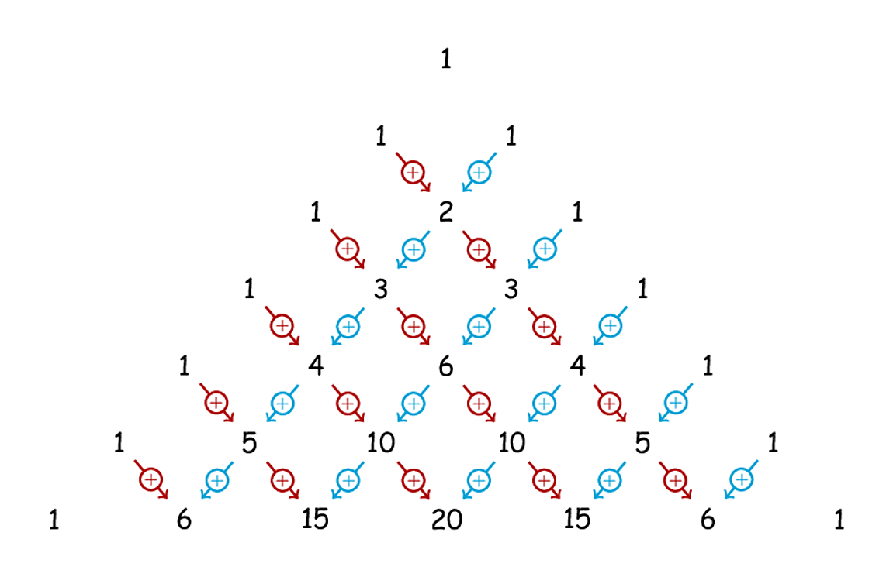
Η τριγωνάρα του Πασκάλ με τις 7 πρώτες γραμμές της.#
Αν δεν το θυμάστε, στο τρίγωνο του Πασκάλ οι πλευρές απαρτίζονται από άσσους (1), ενώ κάθε εσωτερικό σημείο του τριγώνου υπολογίζεται ως το άθροισμα των δύο από πάνω του. Σαφώς, αυτή είναι μία διαδικασία που δε σταματάει ποτέ και μπορούμε να φτιάξουμε ένα οσοδήποτε μεγάλο τρίγωνο του Πασκάλ θέλουμε. Ας πούμε, από κάτω έχουμε τις πρώτες 12 γραμμές του:
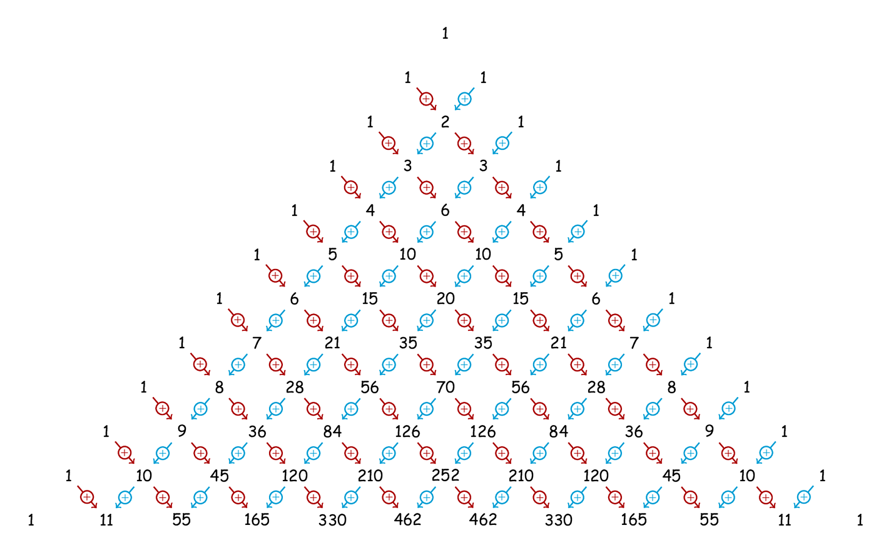
Ένα μεγαλύτερο τρίγωνο του Πασκάλ.#
Εντάξει, αρκετά με το τρίγωνο του Πασκάλ, τώρα, αυτό, όπως φαντάζεστε, έχει μία κομψότατη εφαρμογή στην περίπτωσή μας, καθώς εύκολα μπορούμε να δείξουμε ότι σε κάθε περίπτωση ένα σημείο, \(P\) , μίας καμπύλης Μπεζιέ με \(n+1\) σημεία ελέγχου, όπου \(n=1,2,3,\ldots\) , ας τα ονομάσουμε \(C_0,C_1,\ldots,C_n\) , θα δίνεται από τη σχέση:
όπου \(P_{nk}\) είναι ο αριθμός Πασκάλ που βρίσκεται στη γραμμή \(n\) , \(k\) θέσεις από τα αριστερά, με την αρίθμηση τόσο στις γραμμές όσο και στις στήλες να ξεκινά από το 0. Το παραπάνω, αν κανείς κάνει τον κόπο και θέλει, μπορεί να το γράψει και πιο «κλειστά», χρησιμοποιώντας το τρισκατάρατο αλλά πολύ χρήσιμο σύμβολο της άθροισης:
Τι είναι αυτό το «τρισκατάρατο αλλά πολύ χρήσιμο σύμβολο της άθροισης»; Τι δουλειά έχει ένα «Σ» με την πρόσθεση; Αν θέλετε να εμβαθύνετε λίγο, ρίξτε μια ματιά εδώ.
Τώρα, με τον παραπάνω φορμαλισμό έτοιμο, μπορούμε να εκφράσουμε αρκετά απλά την ιδέα που είχαμε προηγουμένως, ότι δηλαδή, για να περάσουμε από μία καμπύλη Μπεζιέ πρώτου βαθμού σε μία δευτέρου βαθμού χρειαζόμαστε δύο «πρωτοβάθμιους» δρομείς, που θα δώσουν έναν «παραβολικό» δρομέα. Αντίστοιχα, για να περάσουμε σε έναν «τριτοβάθμιο» δρομέα πρέπει να συνδυάσουμε δύο «παραβολικούς» δρομείς, για να περάσουμε σε έναν «τεταρτοβάθμιο» δρομέα χρειαζόμαστε δύο «τριτοβάθμιους» κ.ο.κ.. Αυτό, γραφικά, αποτυπώνεται και στο παρακάτω σχήμα:
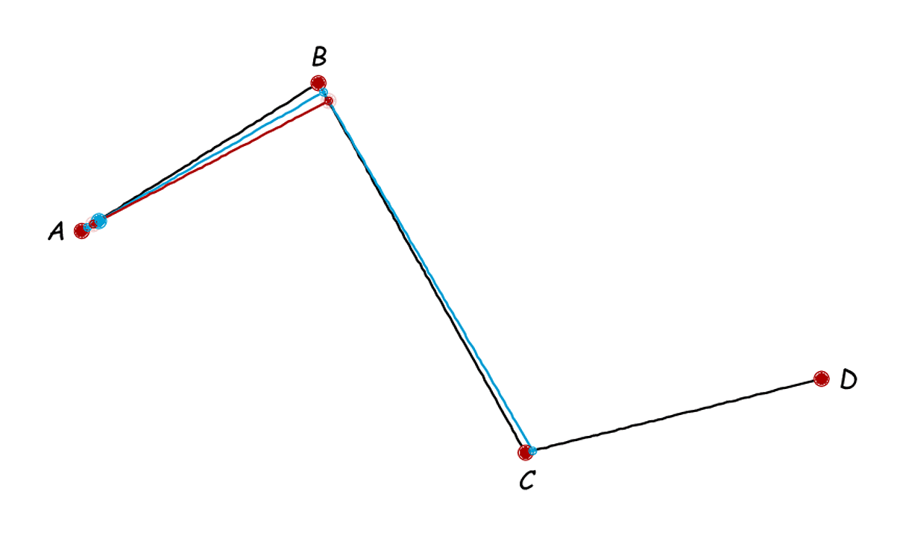
Ωχ, πολλοί δρομείς, πολλά ίχνη…#
Αυστηρά μιλώντας, με βάση την παραπάνω σχέση, αν \(C_0,C_1,\ldots,C_n\) είναι κάποια σημεία ελέγχου, \(P(t)\) είναι ένα σημείο της αντίστοιχης καμπύλης Μπεζιέ βαθμού \(n\) και \(X(t), Y(t)\) είναι σημεία των καμπυλών Μπεζιέ βαθμού \(n-1\) που προκύπτουν από τα \(C_0,C_1,\ldots,C_{n-1}\) και \(C_1,C_2,\ldots,C_n\) , αντίστοιχα, ισχύει η παρακάτω σχέση:
Με τον τύπο που έχουμε παραπάνω αυτό γράφεται και ως εξής:
Μπορείτε, αν έχετε όρεξη, να το αποδείξετε αυτό, εμείς δεν πρόκειται.
Θα θέσουμε, ωστόσο, ένα ερώτημα: Τι νόημα έχει το \(0^0\) και τι σχέση έχει με τις καμπύλες μας; Ίσως δεν το παρατηρήσατε αλλά αν πάτε στην ακόλουθη σχέση:
και θέσετε \(t=0\) (ή \(t=1\) ) και \(k=0\) (ή \(k=n\) ) τότε θα προκύψει στις πράξεις σας ένα \(0^0\) . Πώς το επιτρέψαμε αυτό;
Η αλήθεια είναι ότι το επιτρέψαμε για να γλυτώσουμε λίγο περιττό γράψιμο. Ο αυστηρός τρόπος για να γράψει κανείς την παραπάνω σχέση είναι να την ορίσει για \(t\in(0,1)\) και να επισημάνει ότι στα άκρα συμπίπτει με τα σημεία \(C_0,C_n\) αντίστοιχα. Ή, πιο απλά, να αφήσουμε να εννοηθεί ότι, στην περίπτωσή μας, \(0^0=1\) που μας βολεύει πάρα πολύ. Μπορεί κανείς, μάλιστα, να το τεκμηριώσει αυτό και με πιο αυστηρό τρόπο, αλλά δεν είναι της παρούσης - μπορείτε, άραγε, να εξηγήσετε πώς και γιατί;
Πού Ζουν οι Καμπύλες Μπεζιέ;#
Λοιπόν, έχετε φάει, πιθανότατα, κάπου στα 32 λεπτά (μαντεψιά ακριβείας) μέχρι αυτό το σημείο και ακόμα ίσως να ψάχνετε το «γιατί». Γιατί το κάνατε αυτό, γιατί το έκανε ο μακαρίτης, γιατί όλος αυτός ο σαματάς, γιατί υπάρχουμε, γιατί υπάρχουν οι καμπύλες Μπεζιέ, γιατί να μπλέκεις, γιατί, γιατί, γιατί;
Μπορούμε να απαντήσουμε σε όλα αυτά σύντομα και περιεκτικά (μπορούμε;), αλλά δε θα το κάνουμε, ακόμα. Λοιπόν, προσπαθήστε να σχεδιάσετε μία καμπύλη όπως εσείς θέλετε και, μετά, προσπαθήστε να βρείτε μία σχέση που να την περιγράφει - στο επίπεδο, πάντα. Μην το πάτε ανάποδα, είναι κλέψιμο! Πρώτα η καμπύλη και μετά η εξίσωση.
[Άντε, προσπαθήστε!]
Αν δεν το θυμάστε, έχουμε δει έναν τρόπο να μαντεύουμε εξισώσεις από γραφικές παραστάσεις στο παρελθόν, εδώ.
Λοιπόν, το εκνευριστικό, συνήθως, εκτός κι αν κανείς έχει τρομερή διαίσθηση - ή τύχη - είναι ότι εύκολα φανταζόμαστε πράγματα και τα σχεδιάζουμε με το χεράκι μας, αλλά, στην εποχή των υπολογιστών, δύσκολα τα κάνουμε 0 και 1 - δηλαδή, μαθηματικά - για να τα εξηγήσουμε και στα κουτιά με τα οποία ξοδεύουμε τον χρόνο μας. Με αυτό κατά νου, ο Μπεζιέ, κυριολεκτικά, μας έλυσε τα χέρια! Σκεφτείτε το, επιλέγοντας απλά κάποια σημεία και κουνώντας τα πέρα δώθε μπορούμε να σχεδιάσουμε μία καμπύλη όπως τη φανταζόμαστε και, μετά, με έναν σχετικά κομψό τύπο, να βρούμε και μία παραμετρική εξίσωση που την περιγράφει. Αν δεν το πιστεύετε, δοκιμάστε να παίξετε λίγο με το εργαλείο που φτιάξαμε για τους σκοπούς αυτής της ανάρτησης εδώ.
Αν παίξετε λίγο, θα δείτε πόσο εύκολο είναι, πράγματι, να σχεδιάσετε μία καμπύλη μετακινώντας σημεία γύρω-γύρω (αν θέλετε να σβήσετε ένα σημείο, απλά κάντε δεξί κλικ πάνω του). Για παράδειγμα, μπορούμε να κάνουμε κάτι σαν το παρακάτω:
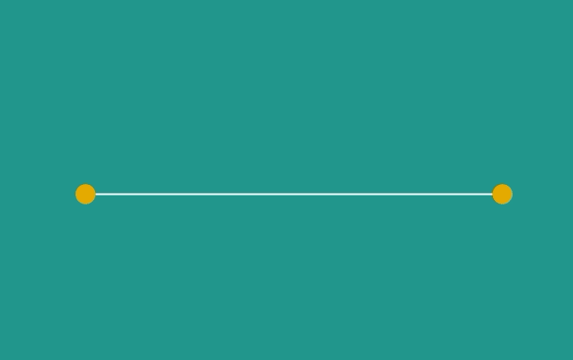
Πωπω! Μια καμπύλη!#
Αν βρείτε κανένα bug ή έχετε καμία ιδέα να την κάνουμε καλύτερη, γράψτε την από κάτω, στα σχόλια, ή, αν θέλετε αυτή η ιδέα να παραμείνει μυστική, επικοινωνήστε μαζί μας απόεδώ!
Επίσης, μπορείτε να κάνετε βόλτα πάνω στην καμπύλη, βλέποντας κάθε φορά ποιο σημείο είναι αυτό που «συνεισφέρει» περισσότερο στο σχήμα της καμπύλης τοπικά, όπως φαίνεται παρακάτω:
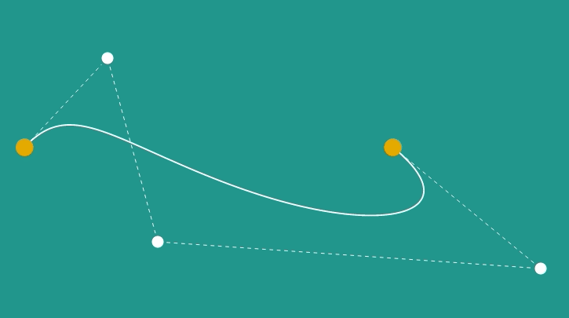
Βάρη πιθανότητας πάνω σε μία καμπύλη Μπεζιέ.#
Αυτό χρήζει και μίας περαιτέρω εξήγησης, είναι η αλήθεια. Λοιπόν, ας θυμηθούμε λίγο την παραμετρική εξίσωση που βρήκαμε παραπάνω:
Ωραία, τώρα, θα πει κανείς, και τι μ” αυτό; Λοιπόν, ας πάρουμε μία συγκεκριμένη καμπύλη να μελετήσουμε λίγο τους συντελεστές και το πώς εξελίσσονται με τον χρόνο. Βασικά, ας πάρουμε την καμπύλη που είχαμε παραπάνω:

Μία παλιά γνώριμη…#
Λοιπόν, σε αυτή την περίπτωση έχουμε μία καμπύλη την οποία ζωγραφίσαμε με τη βοήθεια τεσσάρων σημείων. Με βάση αυτά, η εξίσωση της καμπύλης μας θα έχει τη μορφή:
Ωραία, τώρα, ας ονομάσουμε και κάπως τους συντελεστές των τεσσάρων σημείων, ας πούμε, με πολλή σπουδή:
Με αυτά κατά νου, ας κάνουμε και τις γραφικές παραστάσεις των τεσσάρων συντελεστών για \(t\in[0,1]\) τι οποίες μπορείτε να θαυμάσετε παρακάτω:
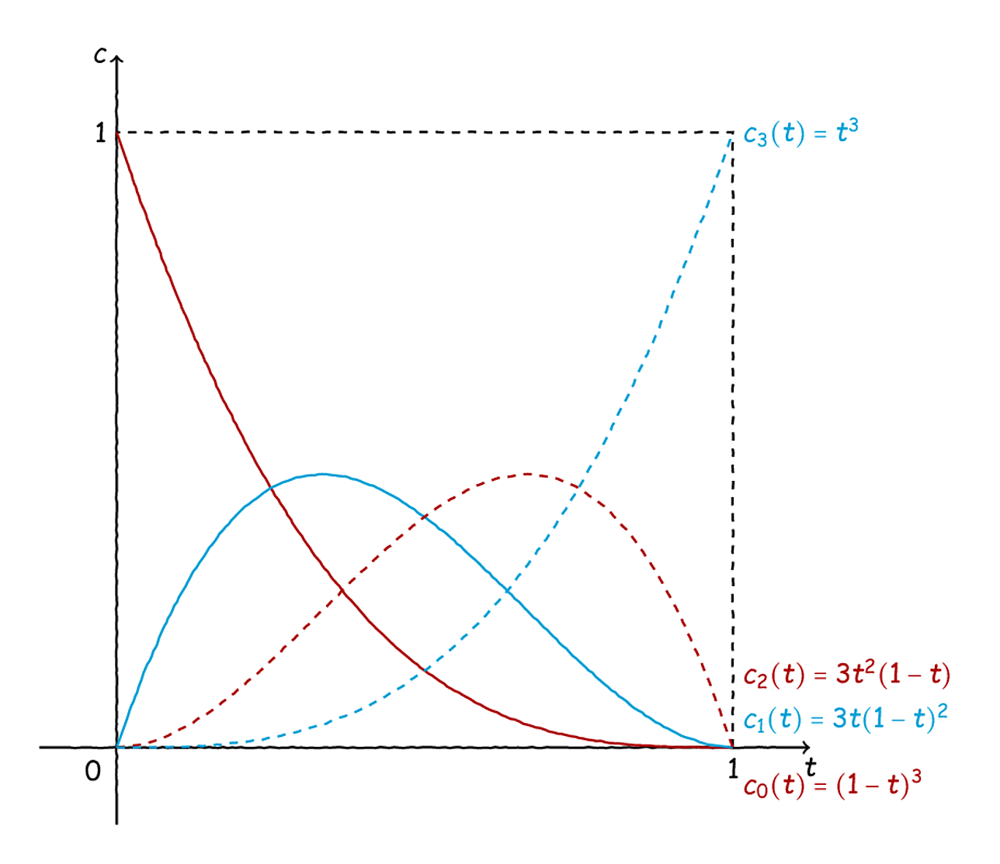
Η χρονική εξέλιξη των τεσσάρων συντελεστών της καμπύλης μας.#
Όπως βλέπετε, ο συντελεστής του σημείου A είναι στην αρχή πολύ μεγάλος και σταδιακά μηδενίζεται, καθώς, και διαισθητικά, το σημείο A καθορίζει πλήρως την καμπύλη «αρχικά» (για \(t=0\) ) αλλά σταδιακά η «επίδρασή» του στη μορφή της φθίνει. Ο αμέσως επόμενος συντελεστής που παίρνει τα ηνία είναι αυτός του B, καθώς αυτό «έρχεται μετά» στη σειρά των σημείων ελέγχου, όπως τα σχεδιάσαμε. Και, πράγματι, αυτό έχει ιδιαίτερο ενδιαφέρον με τις καμπύλες Μπεζιέ: η σειρά των σημείων ελέγχου παίζει ρόλο στη μορφή τους. Μπορείτε, σαφώς, να παίξετε με την ησυχία σας, εξερευνώντας πώς, εδώ.
Μετά, με τη σειρά τους, ο συντελεστής που παίρνει τη σκυτάλη είναι αυτός του σημείου C, ακολουθούμενος, τελικά, από αυτόν του σημείου D, που είναι και αναμενόμενο, καθώς, στο τέλος του χρόνου ( \(t=1\) , δηλαδή, μη φανταστείτε ημερολόγια των Μάγια και τέτοια) η καμπύλη μας καταλήγει εκεί.
Τα παραπάνω, σε γενικές γραμμές, ισχύουν και για πιο πολύπλοκες καμπύλες Μπεζιέ και, αυτό ακριβώς αποτυπώνουν αυτά τα κόκκινα «νέφη» γύρω από τα σημεία στο εργαλείο μας παραπάνω. Είναι μία γραφική αποτύπωση του σχετικού μεγέθους του κάθε συντελεστή, όπως αυτή που είδατε παραπάνω απλά, ίσως, λίγο πιο χρήσιμη στην περίπτωσή μας.
Μία ακόμα ενδιαφέρουσα ιδιότητα των συντελεστών των σημείων ελέγχου μίας καμπύλης Μπεζιέ είναι η εξής:
Πράγματι, μπορούμε να κάνουμε όλες τις επιμεριστικές παραπάνω ή, ψύχραιμα, να παρατηρήσουμε το εξής:
Τέλειο; Με εντελώς ανάλογο τρόπο, δεδομένου ότι όλα τα αναπτύγματα δυνάμεων ακολουθούν πιστά τους συντελεστές στο τρίγωνο του Πασκάλ, όπως και παραπάνω, μπορούμε να αποδείξουμε, γενικά, ότι:
Οπότε, μπορεί πράγματι, κανείς, να σκέφτεται τους συντελεστές των σημείων ελέγχου μίας καμπύλης Μπεζιέ σαν, τρόπον τινά, χρονοεξαρτημένες πιθανότητες που μας δείχνουν, κατά κάποιο τρόπο, πότε θα είναι η καμπύλη μας πιο κοντά σε κάποιο σημείο.
Αυτή ακριβώς είναι και η ευκολία που μας παρέχουν οι καμπύλες Μπεζιέ. Από τη φύση τους, οι ομαλές καμπύλες είναι άπειρα αντικείμενα - υπό την έννοια ότι απαιτούνται άπειρα σημεία για να τις κατασκευάσουμε. Ωστόσο, η εμπειρία μας από τη γεωμετρία μάς λέει ότι υπάρχουν καμπύλες, όπως, π.χ., οι ευθείες ή οι κύκλοι και οι λοιπές κωνικές τομές, που χρειάζονται πεπερασμένη πληροφορία για να καθοριστούν πλήρως. Για παράδειγμα, μία ευθεία μπορούμε να την καθορίσουμε μονοσήμαντα με μονάχα δύο σημεία, ενώ ένας κύκλος καθορίζεται από το κέντρο και την ακτίνα του. Αντίστοιχα, οι καμπύλες Μπεζιέ καθορίζονται μονοσήμαντα από τα σημεία ελέγχου τους. Με άλλα λόγια, με πεπερασμένη πληροφορία μπορούμε αρκετά εύκολα να καθορίσουμε το σχήμα μίας καμπύλης Μπεζιέ απλώς καθορίζοντας τις θέσεις και τη σειρά των σημείων ελέγχου της.
Ακόμα καλύτερα, δε χρειάζεται καν να γνωρίζουμε μαθηματικά με την αυστηρή και στρυφνή, πολλές φορές, έννοια. Δηλαδή, δε χρειάζεται να γράψουμε με τα μολύβια μας εξισώσεις, να λερώσουμε τα χέρια μας με βρώμικες πράξεις ή να ιδροκοπήσουμε πάνω από τόνους χαρτιών για να σχηματίσουμε μία απλή καμπύλη που κι ένας υπολογιστής καταλαβαίνει. Αρκεί να πούμε, περίπου, πώς θα μοιάζει, με τη βοήθεια λίγων σημείων και τα υπόλοιπα τα έχει κάνει ο Μπεζιέ για εμάς.
Μέχρι την επόμενη ιστορία, καλό μεσημέρι και καλό διάβασμα!
Όπως φαντάζεστε, τα πράγματα στο κεφάλι του Μπεζιέ πιθανότατα δε συνέβησαν ακριβώς έτσι, αλλά αυτό δεν έχει σημασία αυτή τη στιγμή. Αν θέλετε να μάθετε περισσότερα για τις καμπύλες Μπεζιέ, τη θεωρία και τις εφαρμογές τους, μπορείτε να ρίξετε μία ματιά σε αυτό το εξαιρετικό (δωρεάν)βιβλίο.
Καλημέρα και καλό διάβασμα!